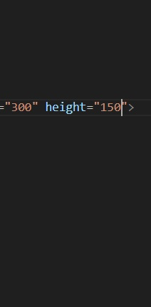

Geschichte des Tischtennis
Tischtennis entstand Ende des 19. Jahrhunderts in England als Indoor-Variante des Tennis. Anfangs wurde es als "Ping Pong" bezeichnet. 1926 wurde der internationale Tischtennisverband (ITTF) gegründet und die ersten Weltmeisterschaften fanden statt. Heute ist Tischtennis eine der beliebtesten Sportarten weltweit, besonders in Asien und Europa.
Grundregeln
- Ein Spiel wird bis 11 Punkte gespielt (mindestens 2 Punkte Vorsprung).
- Nach jeweils 2 Punkten wechselt der Aufschlag.
- Ein Satz besteht meist aus 3 oder 4 Gewinnsätzen.
- Der Ball muss beim Aufschlag zuerst auf der eigenen, dann auf der gegnerischen Seite aufspringen.
- Berührt der Ball das Netz beim Aufschlag, wird wiederholt.
Ausrüstung
- Schläger: Meist aus Holz und mit Gummi beschichtet.
- Ball: 40 mm Durchmesser, aus Kunststoff, wiegt 2,7 g.
- Tisch: 2,74 m lang, 1,525 m breit, 76 cm hoch, Netz in der Mitte.
Berühmte Spieler
- Jan-Ove Waldner (Schweden) – "Mozart des Tischtennis"
- Ma Long (China) – Mehrfacher Weltmeister und Olympiasieger
- Ding Ning (China) – Olympiasiegerin und Weltmeisterin
- Timo Boll (Deutschland) – Europameister und langjährige Nr. 1 Europas
Interessante Fakten
- Tischtennis ist seit 1988 olympisch.
- Der Ball kann Geschwindigkeiten von über 100 km/h erreichen.
- In China gibt es über 10 Millionen registrierte Spieler.
- Die schnellste Ballwechselzeit liegt bei unter 0,2 Sekunden.